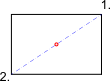

- Na het activeren van deze snap functie, specificeert u de eerste van de twee
punten die het middelste punt definiëren. Bijvoorbeeld één hoek van een
rechthoek.
- Klik op de tweede van de twee punten, bijvoorbeeld de diagonaal
tegenover elkaar liggende hoek van de rechthoek.
